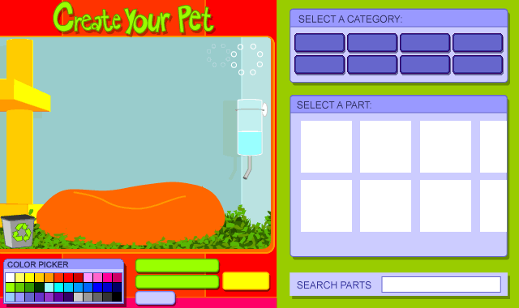

UNOFFICIAL FAN RECREATION
WhyPet Creator
A recreation of Whyville's old Java WhyPet Creator. Build a pet here, then hand the finished design to Whyville's official Buy Pets page.
Before you start
Log into Whyville in this same browser first. When you press BUY ME, this creator sends only the finished pet description to Whyville's official purchase page. Whyville handles your account, pet name, Pearls, and final purchase.
This recreation does not ask for or collect your Whyville username, password, or session.
OPEN WHYVILLE
Share or transfer your design
These buttons do not change the original creator. They just make the finished pet easier to share.
How to use it
- Sign into your real Whyville account in this browser.
- Build your WhyPet above.
- Press BUY ME.
- On Whyville's official page, name the pet and confirm the purchase.
You can also use COPY PET SHARE LINK to send somebody a link that reconstructs the same pet in this creator.